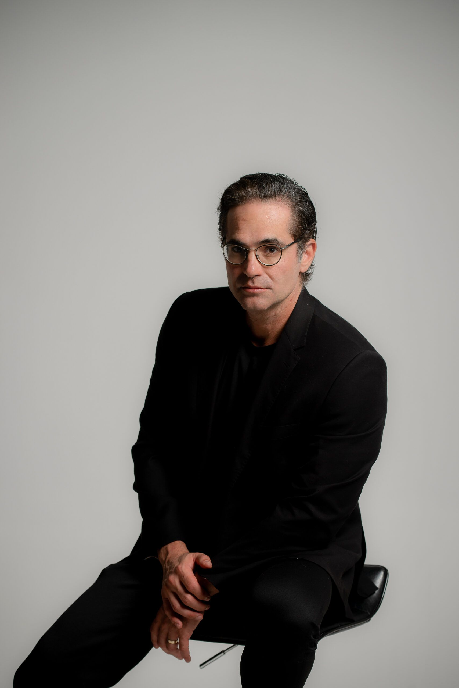

Um sistema integrado de precificação, posicionamento, vendas, gestão e processos para transformar demanda em mais margem, previsibilidade e capacidade de escala.


PAC: Programa de Aceleração de Clínicas · Até 30 médicos
Dois dias para olhar para sua clínica como negócio.
Uma imersão presencial criada para médicos donos de clínicas que querem estruturar e escalar seus negócios. Não será apenas conteúdo conceitual: serão estratégias, processos e sistemas aplicados às áreas fundamentais da operação médica.
Identifique gargalos e prepare processos, equipe e operação para suportar o crescimento.
Gestão · Posicionamento · Precificação · Marketing · Vendas · Processos · Estrutura comercial · Crescimento


Os participantes aprofundarão precificação, posicionamento, processo comercial, vendas, gestão, indicadores, equipe, processos, crescimento e escala, sem uma abordagem superficial.
Processos, crescimento e escala. Imersão presencial de 2 dias em Londrina/PR.
Processo seletivo
Esta edição é limitada a até 30 médicos. Cada aplicação é analisada individualmente e não garante participação.
O médico envia suas informações profissionais e dados sobre o momento atual da clínica.
A equipe do PAC analisa o perfil e verifica o alinhamento com a proposta da imersão.
Os profissionais selecionados recebem o contato da equipe com as próximas orientações.

Quem conduz
A liderança à frente da experiência.
O PAC é conduzido por Dr. Daniel Botelho, dentro do ecossistema Legacy Doctors. Uma experiência criada para médicos que já têm operação e querem levá-la a outro nível.
Para quem é
Médicos donos de clínica e cirurgiões plásticos
Profissionais em fase de estruturação da operação
Médicos com demanda, mas margem abaixo do esperado
Clínicas sem processo comercial estruturado
Profissionais que querem melhorar posicionamento
Médicos que desejam escalar sem depender apenas de volume
Depoimentos
Aline Pavan
Henrique Cruvinel
FAQ
Nesta edição piloto, não haverá cobrança de ingresso. Os médicos selecionados poderão participar sem custo de inscrição. Transporte, hospedagem, alimentação e demais despesas não estão confirmados como inclusos.
O PAC é voltado a médicos donos de clínicas e cirurgiões plásticos. Cada aplicação será analisada, e serão selecionados os profissionais mais alinhados à proposta da experiência.
Não. O preenchimento da aplicação é a primeira etapa do processo de seleção e não garante participação.
Esta edição será limitada a até 30 médicos.
Em Londrina, no Paraná. A data está a definir.
A imersão tem duração de 2 dias presenciais.
Dr. Daniel Botelho, em uma iniciativa do ecossistema Legacy Doctors.
Não há solicitação de faturamento nesta etapa da aplicação.
Pode ser estruturar melhor sua clínica para capturar mais valor do trabalho que você já realiza.
O PAC reunirá até 30 médicos em Londrina para dois dias de imersão em precificação, posicionamento, vendas, gestão e crescimento de clínicas.